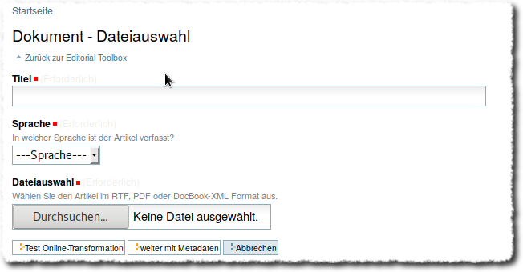
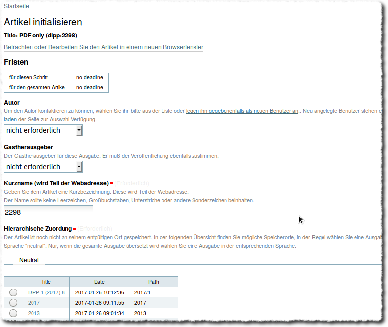
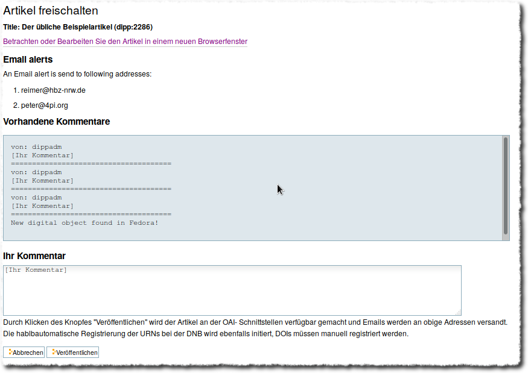

Publikationsworkflow¶
Upload¶
Den Einstieg in den Publikationsworkflow erreicht man über die Editorial Toolbox. Der erste Menupunkt unter Neue Artikel eingeben/ Dokument hochladen führt zu folgender Eingabemaske:

Eingabemaske zum Artikelupload¶
Alle drei Felder sind zwingend auszufüllen, bzw. auszuwählen. Da in der Regel mehrere Probeläufe der Konvertierung nötig sind, bis das ausgegebene HTML den Erwartungen entspricht, hat man an diesem Punkt zwei Wahlmöglichkeiten:
Im ersten Fall Test Online Transformation ist keine Angabe von Metadaten notwendig und der eigentliche Publikationsworkflow wird nicht angestoßen. Der konvertierte Artikel landet in einen Ordner für temporäre Dateien. Im Fall von weiter mit Metadaten muss ein umfangreiches Metadatenformular ausgefüllt werden und der Workflow wird angestoßen.
Je nach Länge und Komplexizität des Artikel dauert die Konvertierung unterschiedlich lange. In beiden Fällen wird man nach der Konvertierung zur sog. Worklist weitergeleitet.
Worklist¶
Die Worklist ist der Dreh- und Angelpunkt, zu dem man nach jedem einzelnen Schritt wieder zurückgeleitet wird. Artikel, die mit Metadaten hochgeladen bzw. konvertiert wurden finden sich in der oberen Liste, Testkonvertierungen in der Tabelle darunter.

Eine Übersicht aller im Publikationsworkflow befindlichen Artikel. Im unteren Teil werden die Artikel aufgeführt, die nur zu Testzwecken konvertiert wurden und nicht veröffentlicht werden sollen.¶
Der für den jeweiligen Artikel nächste Schritt ist in der vorletzten Spalte angegeben, mit dem ‚ausführen‘-Link in der letzten Spalte wird der Schritt gestartet.
1. Schritt: Artikel initialisieren¶
Nach dem Konvertieren befinden sich die Artikel in einem temporären Ordner. Für die entgültige Veröffentlichng muss zunächst unter ‚Hierarchische Zuordnung‘ ein bereits bestehender Jahrgänge und Ausgaben Ordner ausgewählt werden.

Erster Schritt im Workflow: Initialisieren¶


Artikel freischalten¶

Letzter Schritt im Workflow: Freischalten¶
Bei Veröffentlichung des Artikels wird eine Email an vorher definiert Adressen alertEmailAddresses verschickt, der Text ist auch anpassbar.